MedBridge — a patient portal that finally makes sense.
A full redesign that pulls appointments, prescriptions, records, and billing into one calm, secure, accessible place.
Patients juggled four disconnected portals and still couldn't find basic information.
The old patient portal scattered appointments, prescriptions, medical records, and billing across separate sections, each with its own navigation. People called support for things that should've taken thirty seconds to do themselves. The portal just didn't match how patients actually think about their own care.
It wasn't a visual problem, it was a structural one. The portal had been built as four separate tools, and that's exactly how it felt to use.
Three patterns that shaped every decision that followed.
I ran user interviews, dug through support-call logs, and reviewed five competing healthcare portals. Two personas anchored the whole thing: Beth, a mobile-first patient, and Mitchell, an older caregiver who's far less comfortable with tech.
Patients treat the portal as one product
Every person I interviewed called it "the portal," like it was one thing. In practice they were living with four disconnected tools. Drop-off spiked whenever someone tried to move between service areas.
Appointments are the front door
Scheduling and managing visits was how most people entered the portal in the first place. And yet that flow needed the most clicks of any section, with more dead ends than anywhere else.
Stress makes every flaw worse
People open health portals at anxious moments: right before a procedure, right after a diagnosis, when a prescription's about to run out. Their mental bandwidth is already spent before they even open the app. So clarity here isn't a nice extra, it's the whole job.
Six decisions the journey map forced.
Mapping Beth's path from "I should see my cardiologist" to an actual confirmed visit turned up two clear friction points. Every decision below traces back to a moment where the old portal made an already-anxious task harder than it needed to be.
In-network by default, sorted by fit
Beth's real problem was too many results, unclear in-network status, and choice paralysis. So the redesign defaults every search to in-network providers and sorts by soonest availability and best match, instead of just dumping an alphabetical list on her.
Real availability, not a guessing game
Her second problem: barely any slots fit a 9-to-5 schedule, and figuring out what was actually open took too much digging. Now evening and telehealth slots get highlighted up front, and real open times show before she even commits to a provider.
Plain language, not clinical jargon
Beth put it plainly: she wanted to understand lab results without needing a translator. So test results now carry a "Reviewed" status in plain English instead of raw lab codes. Same information, no medical degree required to read it.
One accent color, spent only on action
Blue shows up only where a decision is actually live: a primary button, an active nav item, a selected date. Everything else stays neutral. That way the one thing that needs attention isn't competing with a bunch of brand color for it.
44px targets, built for shaky hands
Mitchell told us he was afraid of clicking the wrong button and breaking something. Every interactive control now spans at least a 44×44px hit area with 8px of clear space around it. That's comfortable for older caregivers, and honestly for anyone whose motor precision isn't perfect.
A keyboard path, not a visual afterthought
Tab order matches the visual reading order exactly, a skip-link sits first in the DOM, and every icon-only control has a descriptive aria-label. I checked all of this with an actual Tab-and-VoiceOver pass, not just a contrast checker.
Mitchell needed two accounts. He got one.
Not everything from the research made it into this version, and that's worth being upfront about.
The caregiver dual-account gap
Mitchell's goal was explicit: keep his and Nicola's appointments in one organized place. His actual pain point was just as direct: switching between his own account and hers was confusing, on top of an interface he already found dense and hard to read.
Real caregiver access means a second identity with permissioned visibility into a spouse's records, not just a shared login. Building that would have changed several information-architecture decisions in this project: how the dashboard greets the user, how appointments get attributed, how billing splits across two people. That's a redesign of the account model, not a feature bolted onto one.
So I scoped this version around a single-patient account and wrote the gap down instead of forcing in a shortcut that would've undermined the "one calm, organized place" goal for everyone else. It's the first thing I mention in the reflection below, and it's the most consequential thing I'd build next.
From lo-fi to final, the dashboard.
The dashboard shows the clearest before-and-after. KPI cards above the fold, two content blocks below: that layout got locked in at the wireframe stage and never changed after that.
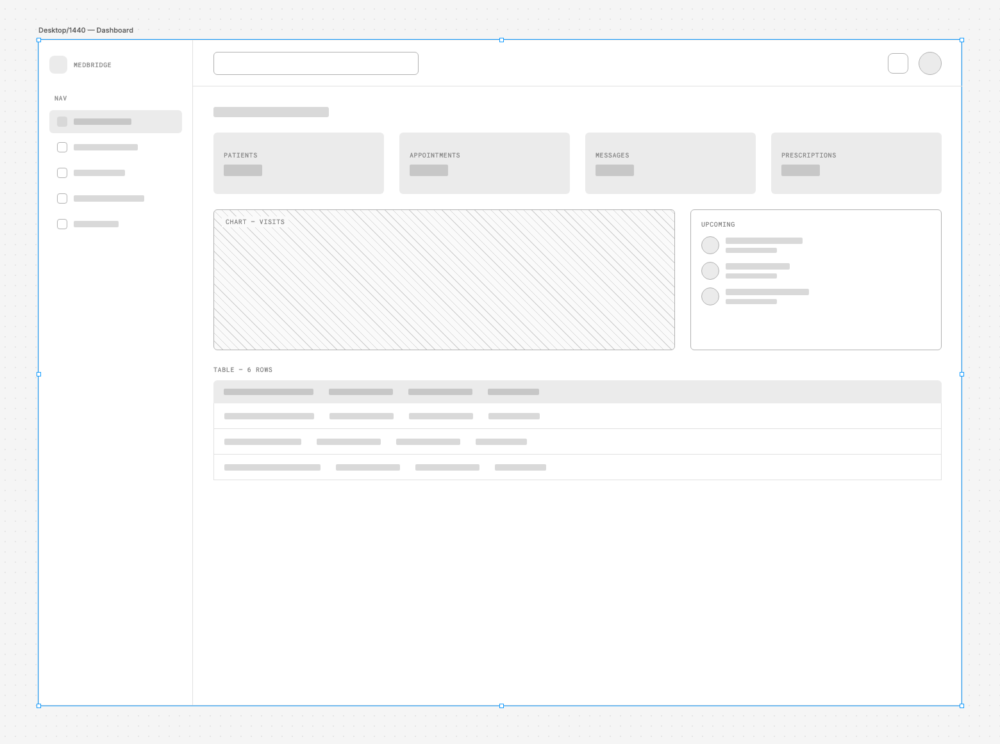
Two-column layout below the KPI row: Upcoming Appointments on the left, Health Summary on the right. At wireframe stage it was already clear patients needed both, not one or the other.
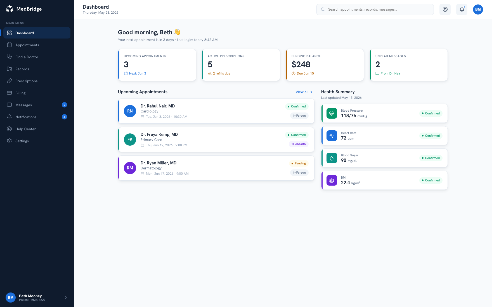
The visual system went on top: stat cards, accent-led appointment rows, a vitals grid. The wireframe's structure stayed put, because the hierarchy was already right.
Every numbered dot traces back to a friction point.
The dashboard and provider search carry the most research weight of any screens in the flow. Below, each element is annotated with the specific finding it came from.
Pending balance sits beside unread messages, not buried in Billing. This is Insight 02: appointments and money are both front-door tasks. Beth shouldn't have to leave the dashboard just to find out she owes $248.
Confirmed, Telehealth, and Pending are visible without opening a row. This ties to Insight 03: stress makes friction worse. Someone scanning for "what do I need to do next" gets the answer right in the list, no click required.
Vitals carry a "Confirmed" status, the same pattern as appointments. One visual language for "this is settled" means a stressed patient has fewer things to learn just to read the screen.
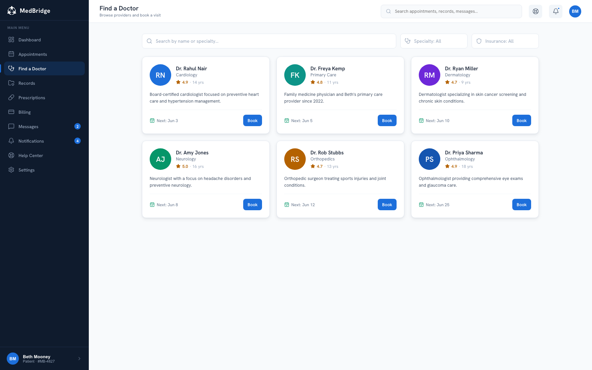
Insurance filter defaults to a live decision, not a dead-end dropdown. This is Decision 01. The journey map's biggest friction was unclear in-network status, so filtering by insurance is now a first-class control instead of something buried in Advanced Search.
Rating and years of experience sit directly under the name. Choice paralysis came from too many undifferentiated results. A trust signal at a glance narrows the decision without making someone open every profile.
Book is one tap from the search results, not three screens deep. This is Decision 02. Showing real availability up front means Beth commits to a slot without a separate "check availability" round trip.
One system. Five unified flows.
Appointments, records, prescriptions, billing, and profile all share one navigation model and one set of components. When people are already stressed, not having to relearn the interface every time they switch sections matters.
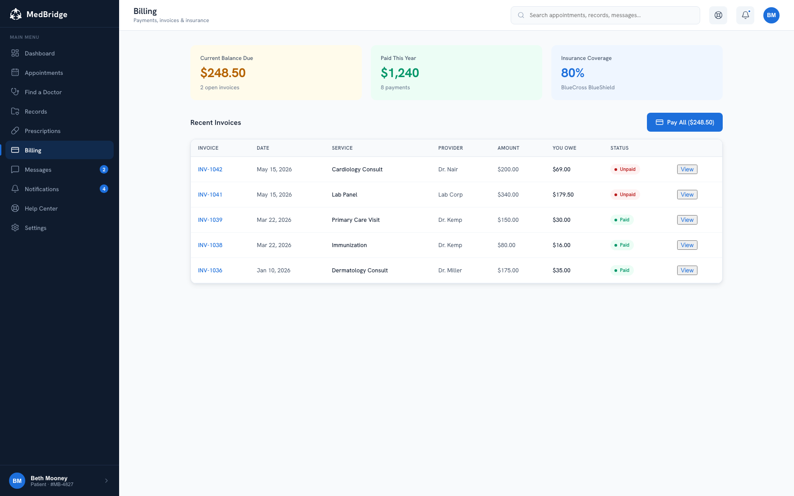
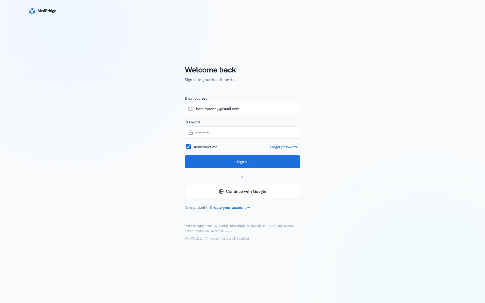
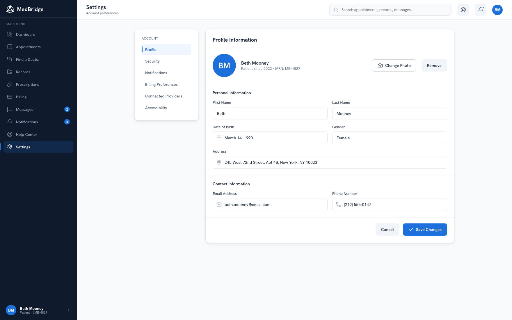
Audited, not assumed.
The "AA WCAG 2.1" tag in the hero is a measured result, not a checkbox I ticked. I evaluated the dashboard specifically against Mitchell: 68 years old, low-to-moderate tech comfort, the least confident user in the research, not just against AA compliance as an abstract standard.
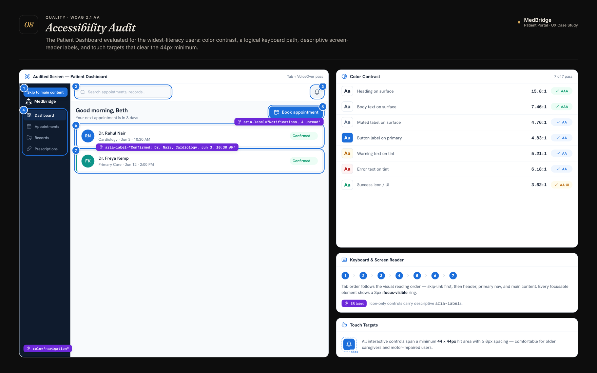
"This wasn't really a visual redesign. It was a clarity redesign. I tested every decision against one question: would a patient under stress still know what to do next?"
Design principle · MedBridge
One portal, five unified flows.
The final redesign folds four disconnected portal sections into one system, with consistent navigation, predictable interactions, and full WCAG 2.1 AA compliance. Appointment booking, prescription refills, billing, medical records, and profile management now share one mental model and one set of components.
What I'd do differently.
I designed the mobile experience after desktop. Appointment check-ins and prescription refills mostly happen on phones, so next time I'd flip that order: mobile-first wireframing, then scale up.
I built accessibility into the components, but I didn't test with screen reader users during wireframing. Next time I'd run at least one assistive-technology session early, in the lo-fi stage, instead of saving it for a final audit before handoff.
Full process archive (personas, journey map, sketch notes, and wireframes)
Two archetypes, opposite ends of tech literacy.
Beth (36, mobile-first, high tech literacy) and Mitchell (68, caregiver, low-to-moderate tech literacy) anchor every design decision here. Together they span the widest gap in tech comfort MedBridge needs to serve.
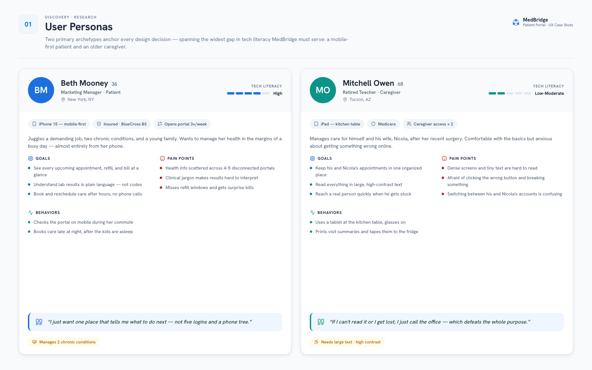
Realize, find, choose, confirm, done.
Beth's path from realizing she needs care to an actual confirmed visit. Two friction points drove the redesign priorities: finding an in-network doctor, and finding a slot that fits her schedule.
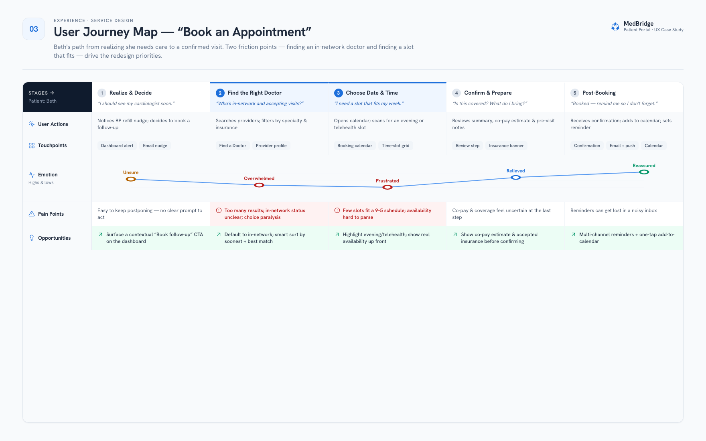
One home, seven sections, three levels deep.
A flat IA with nine top-level surfaces, built shallow on purpose. Every screen is reachable in two taps from the dashboard.
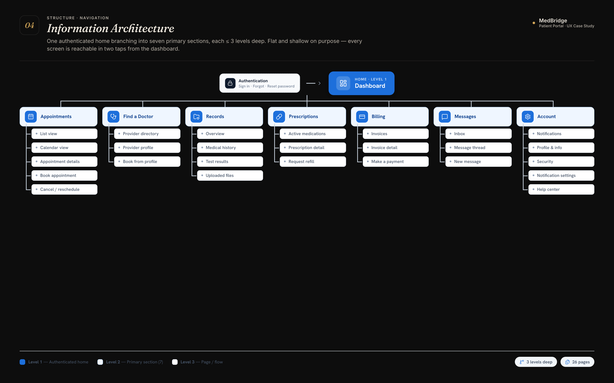
Paper first. Before committing to anything.
Hand-drawn sketches let me pressure-test layout ideas without getting attached to pixels too early. Each one answered a single structural question before I moved to digital.
Split-screen sign-in
Brand copy ("Your health, simplified.") and trust signals like Secure & Private, Patient-First Design, and 24/7 Access sit on the left, so new patients know what they're signing into before they even enter credentials. For a health portal, trust needs to show up before the password field does.
Dashboard with KPI cards above the fold
Upcoming appointments, active prescriptions, pending balance, and unread messages all show up as cards before any scrolling: the four things patients check first. Nobody stressed should have to go hunting for that.
Appointments list with inline actions
Status tabs (All / Upcoming / Past / Cancelled) sit at the top instead of hiding in a dropdown. Telehealth appointments get a "Join" button right in the list row, so starting a virtual visit never means opening a detail screen first.
Calendar with persistent day-detail panel
Selecting a date reveals the appointment card and a "Book This Day" button in a panel on the right, without leaving the calendar. Checking and booking on the same day stays in one place.
Digital wireframes. Decisions locked in.
Moving to digital wireframes was the real test of whether the sketch decisions held up at screen fidelity, before any visual design work started.
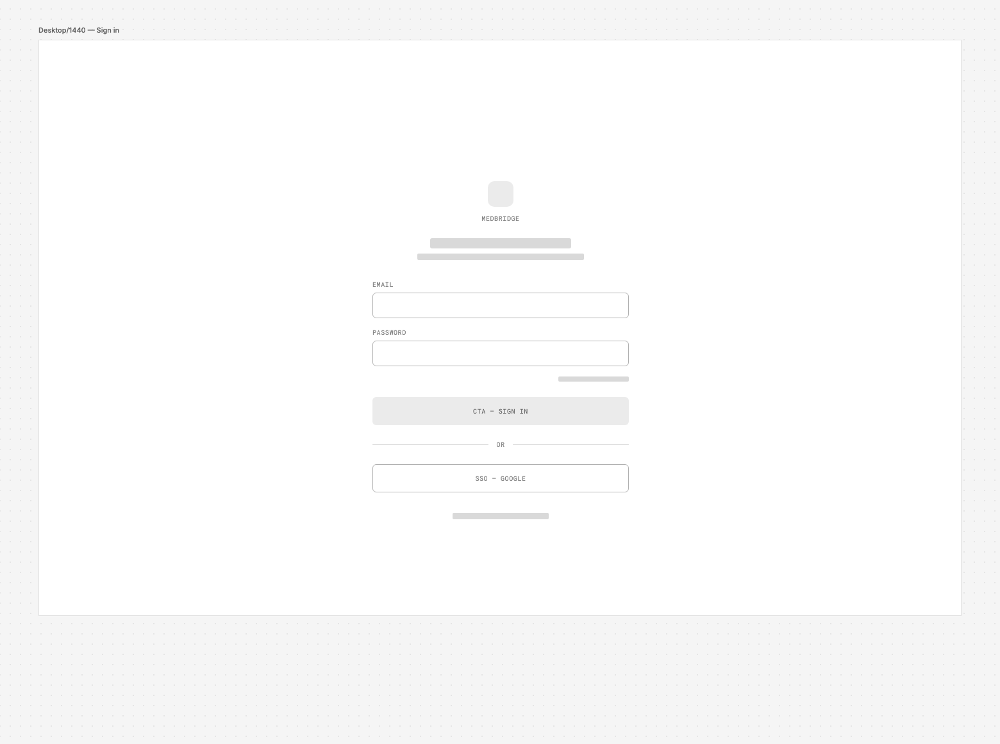
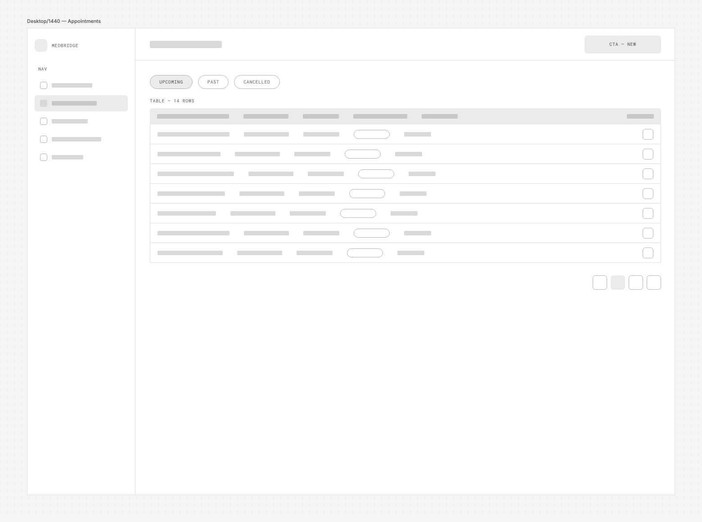
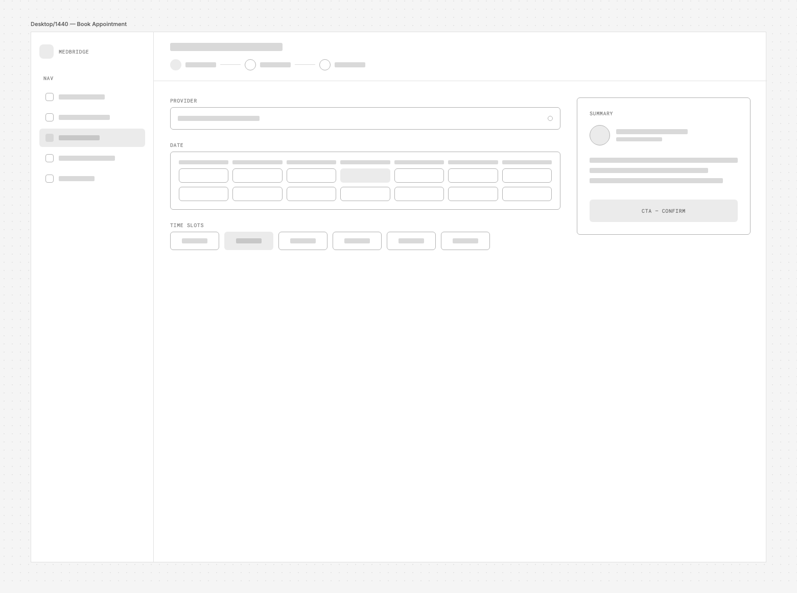
Real labels, real hierarchy.
Same three screens, now with defined components, real copy, and basic hierarchy. One accent color, blue, introduced strictly for primary actions and active states.
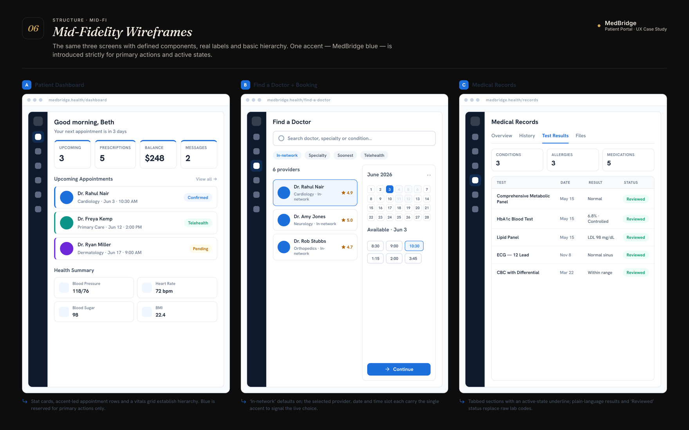
A single source of truth.
WCAG-checked color roles, a 1.20 type scale, a 4px spacing rhythm, and the core components every MedBridge screen gets built from.
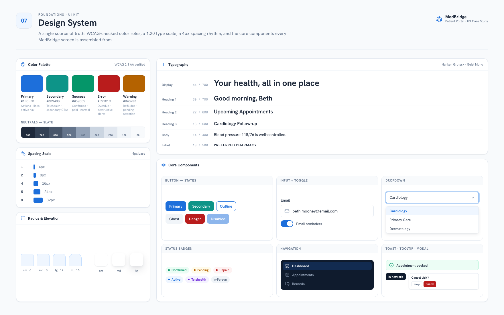
The primary path, fully clickable.
30 real screens: sign in → dashboard → book → pick date & time → confirm → success. It's real screen-to-screen navigation, not a slideshow pretending to be a product.
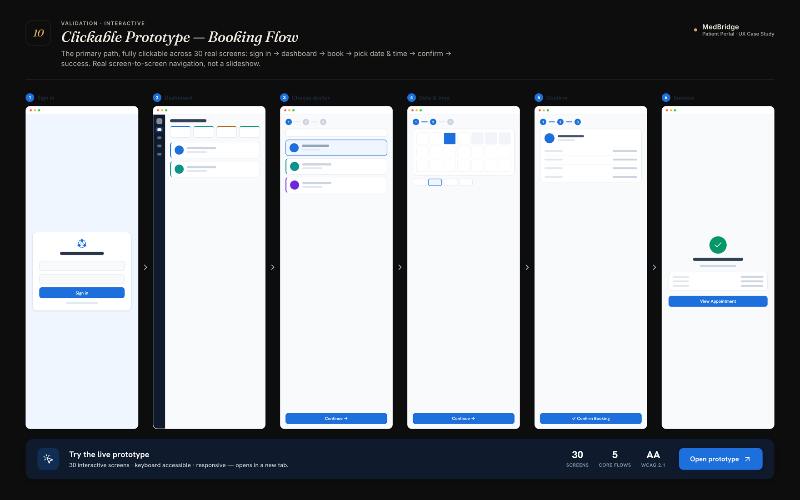